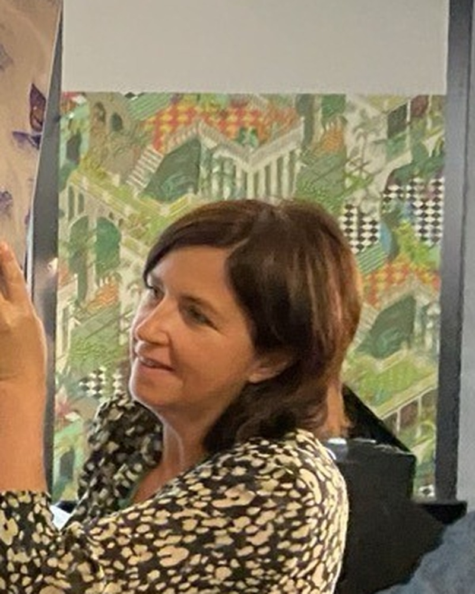

Notre histoire
Art'Cadres Luxembourg réunit en un même lieu l'encadrement sur mesure, la restauration de tableaux, la dorure et une galerie d'art. Un espace unique où savoir-faire artisanal, conseil personnalisé et passion de l'art se rencontrent.

L'excellence de l'encadrement sur mesure
Kathia Neumann a ouvert l'antenne luxembourgeoise après plus de trente ans à Metz. L'atelier de Hollerich réunit encadrement, restauration avec Sylvie Schied, dorure et une galerie.
Moulures contemporaines ou classiques, verres de protection et passe-partout : chaque détail est choisi pour l'œuvre, son mur et son propriétaire.
Encadrement sur mesure
Baguette, passe-partout et verre choisis pour sublimer chaque œuvre.
Restauration de tableaux
Conservation et remise en valeur des pièces anciennes.
Dorure à la feuille
Cadres, miroirs et objets dorés selon les techniques traditionnelles.
Galerie d'art
Une collection coup de cœur, encadrée et mise en lumière.



Particuliers, artistes, collectionneurs, architectes, décorateurs, entreprises et institutions : un accompagnement confidentiel, à l'atelier.
Prendre rendez-vous